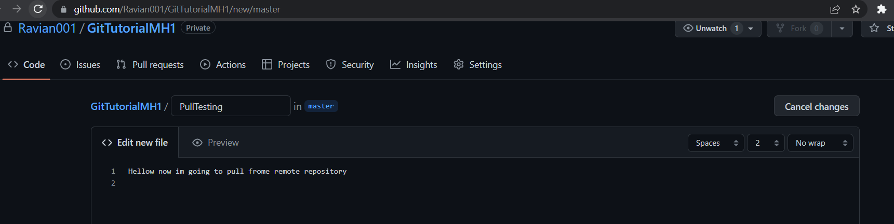

Let Us Learn How to Use Git!
Get Official Git Cheat Sheet;
Let Us Learn How to Use Git!
Collaborating on projects has always been a topic of discussion. Today, collaboration has a huge effect on the flow of project. Multiple people working on a project need to manage bulk of files. Obviously everyone knows that this can cause synchronization issues let along other issues such as version management etc. For this purpose, the concept of VCS was introduced which makes collaboration on projects trivial. VCS stands for Version Control System. As evident from the name, this system is used for managing different versions of a project, hence tackling the problem of synchronization. On this webpage, you will find a brief tutorial to get you started with git and a few commands followed with a case study, that will get you on track to collaborating your next project perfectly.
Git can be installed from their official site along with documentation, cheat sheet, and the GUI version github desktop.
After creating an account on github, you can create a new repository by going to your profile -> repositories -> new. After clicking on new, you will have to enter name that you want to display on your repository, repository's visibility (private/public), and add an optional description.
After creating a new repository, you can initialize a local repository
by the following command:
git init
Add the remote repository as it's origin so that your changes are backed up as your make
progress. The newly created repository can be pointed to a local repository,
using the following command:
git remote add origin [url]
An initialized local repository will have a .git hidden folder in it, as shown in the screenshot.
The url can be copied from the remote repository, but as a shortcut, the url is always
in the following format:
https://github.com/[username]/[repository_name].git
After setting up your first repository, remotely and locally, you can start
working on your project. You can start by creating a file, doing some work in it, and then adding
it to the stage. You can use the following command to view the status of stage:
git status get stage status
You can use the following command to add files to stage:
git add [file specifier] to add files
After you have added your files, and staged them, you can save your work by
committing it. The following command is used to commit your unsaved changes.
git commit -m "[message]" to commit a change
Deleted some files accidentally? Made some changes that caused a bug? Instead
of asking your team member for his copy or calling that bug a feature like a clown , you can use git's rollback
feature to rollback to a previous commit. First, check the hash of last working project commit you made,
in this case, "Done Important Work", by the following command:
git log
and then after noting down the first 7 digits of the corresponding commit hash, use following command
to rollback:
git reset --hard [commit_hash] to add files
When you start collaborating with other people, you can work simultaneously,
without the need of creating v1.zip, v2.01.zip, v3.01123.zip, or FINAL_LATEST_VERSION.zip by creating
branches. Git provides the feature of branching your project. You can create branches of your repository
and have some people work on a specific feature on one branch, and a group of other people on a second
feature on another branch. You can use the following commands to create a branch and to switch to another branch.
git branch [branch_name] to create a new branch with branch_name as branch name
git branch to view all the branches in a repo
git checkout [branch_name]" to to switch to branch_name branch
To have a remote backup of your work and versions, you can push your changes to
remote repository by the following command:
git push origin main [branch_name] to to push changes to branch_name branch
If there are more than one contributors on a repository, before pushing your changes, it is a
good habit to pull changes from remote repository to local repository to have your local work synced with remote
changes. You can use following commands to pull, fetch remote changes:
git fetch origin [branch_name] to fetch changes from a branch
git pull origin [branch_name] to pull changes from a branch
Fetch Testing
Pull Testing

Yo! ever searched your assignment online 🤡 and found a github repository for its solution? No problem! you can
clone the repository using the following command:
git clone [url]